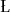

Since nowdays most media are represented in a digital form, it is natural to apply a technique that was proved successful for inherently digital media such as text, namely Lempel-Ziv type schemes (cf. [17,18]). In [8,9] we propose to extend Lempel-Ziv approach to lossy (approximate) compression. While it is know that the lossless Lempel-Ziv is asymptotically optimal (i.e., its compression ratio is close to the entropy), in [9]

uczak and Szpankowski (cf. also [16]) proved recently that a lossy extension of Lempel-Ziv scheme (of low complexity) is suboptimal, that is, it attains the compression ratio equal to the so called generalized Rényi entropy (instead of the optimal rate-distortion).
Using this theoretical underpinning, Atallah, genin and Szpankowski
[2] have recently implemented the above idea for image compression.
This novel scheme is called Pattern Matching Image Compression
(PMIC), and it is briefly review in the next section (see also [4]
for another implementation of a lossy Lempel-Ziv'78 scheme, however, there
is no theoretical justifications for the reported results). In [2]
it was concluded that for images of good quality PMIC scheme is competitive
to JPEG and wavelet image compression. Superiority of PMIC at
decompression (which does not require any computations since it basically
only reads data) may turn out to be a crucial advantage in practice where
asymmetric compression/decompression is a desirable feature (e.g., off-line
video).
The central theme of above approach is the notion of approximate
repetitiveness. That is, if a portion of data almost-occurs five times,
perhaps in close proximity but not necessarily contiguously, then we need
only store the first such occurrence: The other four can be stored as
(direct or indirect) references to the first occurrence. Somewhat
surprisingly, this theme of exploiting approximate repetitiveness is
uniformly useful to multimedia data, hence applies to text as well as to
image, video, and audio data. However, the approximate repetitiveness can
be hidden in various forms for different types of media (so one must
consider different distortion measures). This is in contrast with current
technology, where a different approach is used for each of these types of
data (e.g., text and images). We plan to explore it in our future
research.
In [2] several enhancements were introduced to the basic idea
of PMIC that were instrumental for achieving good results. For example:
searching for reverse approximate matching, recognizing substrings in
images that are additively shifted versions of each other, introducing a
variable and adaptive maximum distortion level, and so forth. These
enhancements are crucial to the overall quality of our scheme, and their
efficient implementation leads to algorithmic results of interest in their
own right. In this paper, we introduce one more enhancement, namely
prediction that - as we shall see - will lead to shorter compression time
and better compression ratio without significantly deterioration of image
quality. Actually, we propose a more ambitious plan, namely implementing
DPCM (i.e., Differential Predictive Code Modulation) within PMIC.
To see possible advantage of this new enhancement, we should observe that
differential image (composed of the difference between the original image
and its prediction) is much less correlated than the original one. Thus,
any compression algorithm should gain in performance when applied on the
differential image, instead of on the original one. However, for lossy
compression there is a need to perform a prediction loop as explained
in details in Section 3. In DPCM, this prediction loop is performed on
each pixel, one by one. Thus, the implementation of a predictive feature
for such a scheme as PMIC needs a few adaptations, because PMIC treats
several pixels at a time, and does not work on a pixel-by-pixel basis.
The main idea to use a predictive loop in PMIC is that what is the basic cell for DPCM, namely one pixel, becomes the longest prefix found in the database for PMIC. As for DPCM, the differential image is quantized, thus allowing a slight increase in the compression ratio. Besides, although a differential image is significantly less correlated than the original image, it is still slightly correlated. This is because the low-order, linear predictor typically used here or in DPCM is suboptimal. But, while a Huffman coding scheme would not take advantage of this remaining correlation, since it encodes each differential value independently of its neighboring values, the PMIC scheme does, because it is a context based scheme. Thus, PMIC can achieve a bit rate potentially smaller than the zeroth-oreder entropy of the differential image. We report in this paper our implementation and preliminary experimental results.